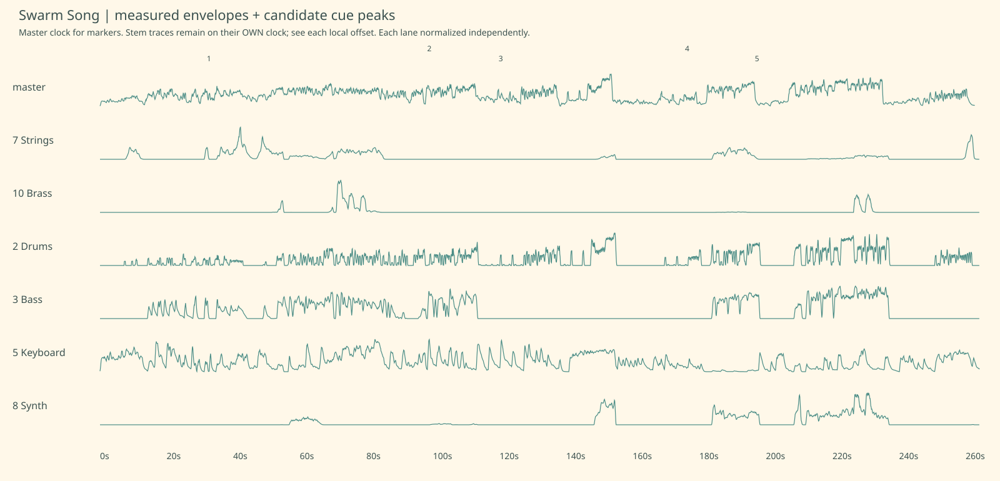

the first connection → swell. candidate; estimated ±250ms. Stem peak 32.15s, local offset -65ms.
Master excerpt starts 29.085s; cue peak is 3.000s into this clip.Signal-derived candidates; emotional roles and agent gestures are proposals. String-stem evidence does not confirm cello. Click a cue to seek the full master video, or listen to its short excerpt.

Stem traces use their original clock; numbered markers use the master clock. Local offsets are listed below. Lane heights are independently normalized.
the first connection → swell. candidate; estimated ±250ms. Stem peak 32.15s, local offset -65ms.
Master excerpt starts 29.085s; cue peak is 3.000s into this clip.playful momentum → sway. candidate; estimated ±250ms. Stem peak 98.90s, local offset -632ms.
Master excerpt starts 95.268s; cue peak is 3.000s into this clip.a little movement in the quiet → sway. candidate; estimated ±250ms. Stem peak 120.55s, local offset -824ms.
Master excerpt starts 116.726s; cue peak is 3.000s into this clip.finding an old note → sway. candidate; estimated ±250ms. Stem peak 177.00s, local offset -1288ms.
Master excerpt starts 172.712s; cue peak is 3.000s into this clip.recognition grows → swell. candidate; estimated ±250ms. Stem peak 198.20s, local offset -1519ms.
Master excerpt starts 193.681s; cue peak is 3.000s into this clip.